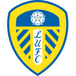
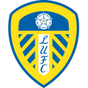
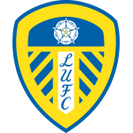
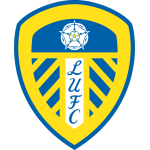
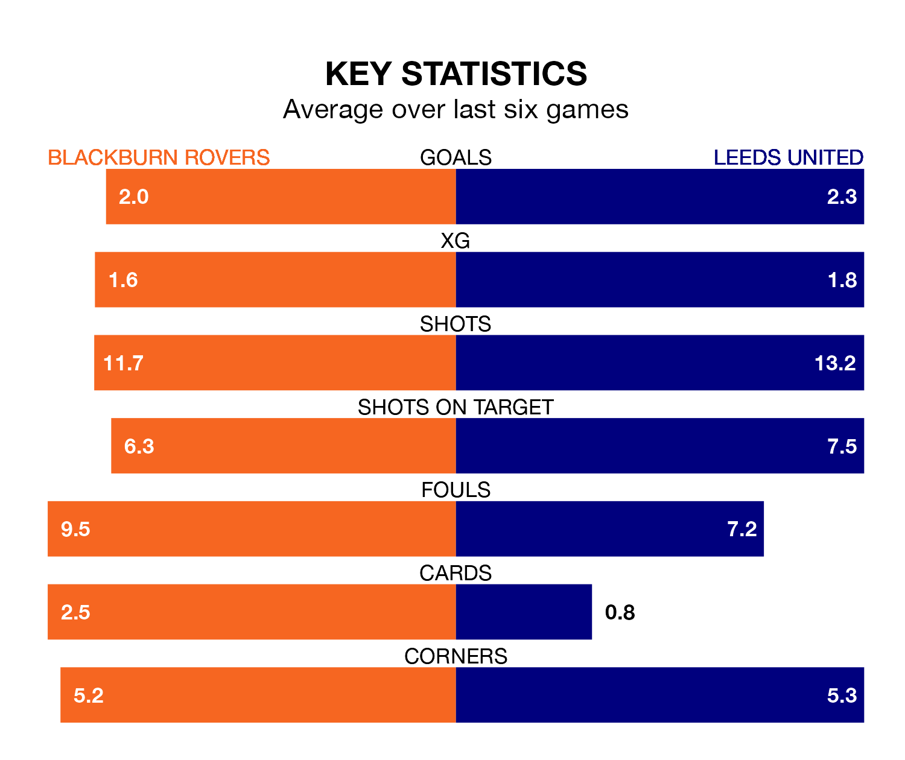

Leeds United are strong favourites to take all three points despite Blackburn Rovers' home advantage in Saturday lunchtime's match at Ewood Park.
*Betting Company* are offering odds of 1.85 on Leeds sealing the win, with the visitors sitting third in the Championship table.
Blackburn, who are seventh in the league and 10 points behind Leeds, are priced at 3.9 to win. A draw is set at 3.8.
With 34 goals in 19 games so far this season, Leeds are the league's joint-second-highest scorers with 1.8 goals per game. And they are conceding fewer than average, letting in 20 goals at a rate of 1.1 per game.
Blackburn are also above average scorers, with 1.7 goals per game, compared to a league average of 1.4. They have conceded 1.6 goals per game.
In Samuel Szmodics, Rovers have the league's sharpest shooter so far this season. He has notched 14 goals in 19 appearances.
His goal rate of one every 119 minutes is quicker than that of Crysencio Summerville, United's top scorer with a goal every 155 minutes, and a total of eight goals in 16 games.
The hosts are in mixed form in the Championship, with three wins and three losses from their last six games.
With five wins and a draw over that period, the away team's form is much better – they have taken 16 points from 18, compared to Blackburn's nine.
In the last 10 years, Blackburn and Leeds have played each other on 12 occasions. Blackburn won five of them and Leeds seven.
On average, Blackburn scored 1.5 goals and Leeds 1.5 in those matches.
Their last meeting was on July 4 2020, when Leeds won 3-1 away.
Blackburn's last match was on Saturday, a 3-1 loss against Sheffield Wednesday, with Szmodics getting the goal for Blackburn.
Leeds beat Middlesbrough 3-2 last time out, also on Saturday, with Daniel James, Joël Piroe and Summerville on the scoresheet.
